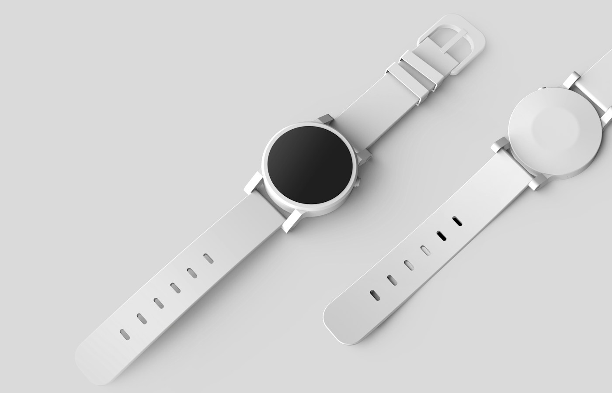

SKU visuals
Серия e-commerce визуалов для товарной линейки: чистые карточки, product scenes, баннеры и единый визуальный стиль для digital-продаж.

Сделать линейку товаров визуально единой
Когда у бренда много SKU, визуалы часто начинают выглядеть случайно: разный свет, разная перспектива, разные фоны и разная плотность кадра. Мы собираем систему, где каждый товар выглядит самостоятельным, но при этом остаётся частью одной линейки.

Коммерческий продуктовый кадр: сильный силуэт, чистый фон, понятный фокус и готовность к рекламному размещению.

Карточка товара для каталога: продукт остаётся главным, а визуальный стиль поддерживает ценность бренда.
Один продукт — несколько коммерческих задач
Каждый товар может быть показан по-разному: как карточка каталога, как рекламный hero-визуал, как деталь упаковки, как lifestyle-сцена или как часть набора. Мы заранее проектируем эти форматы.

Технический продукт: чистый силуэт и акцент на форме помогают быстро считывать товар.
Premium-сцена: свет, отражения и материалы усиливают ощущение ценности продукта.
Визуальная база для продаж
Итог — набор изображений, который можно использовать в интернет-магазине, маркетплейсах, лендингах, рекламе и социальных сетях без ощущения, что материалы собраны из разных источников.
SKU-линейка выглядит как бренд
Серия визуалов помогает товарной линейке выглядеть цельно, дороже и профессиональнее во всех digital-точках.
Что входит в набор
Карточки SKU, hero-визуалы, рекламные product scenes, детальные кадры, варианты фонов и правила для масштабирования линейки.